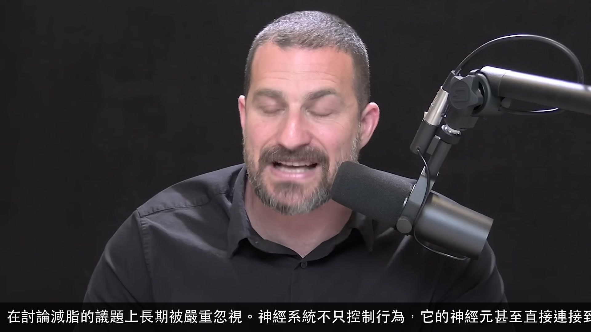
在討論減脂的議題上長期被嚴重忽視。神經系統不只控制行為，它的神經元甚至直接連接到脂肪組織，可以改變脂肪被燃燒的機率。
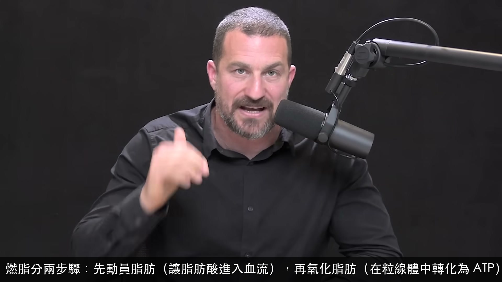
燃脂分兩步驟：先動員脂肪（讓脂肪酸進入血流），再氧化脂肪（在粒線體中轉化為 ATP）。神經系統可以同時加強這兩個步驟。
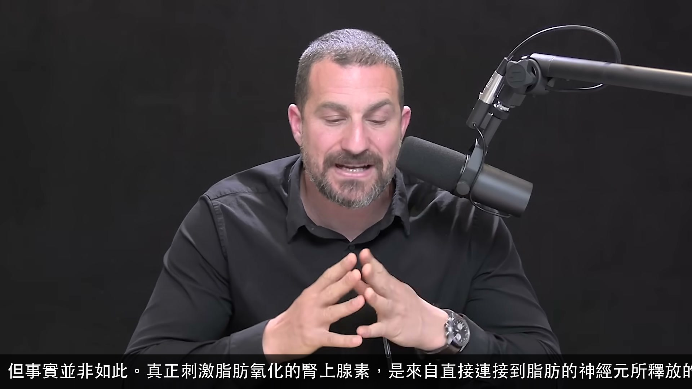
但事實並非如此。真正刺激脂肪氧化的腎上腺素，是來自直接連接到脂肪的神經元所釋放的——這是一個局部過程，而非全身性的血液循環腎上腺素。
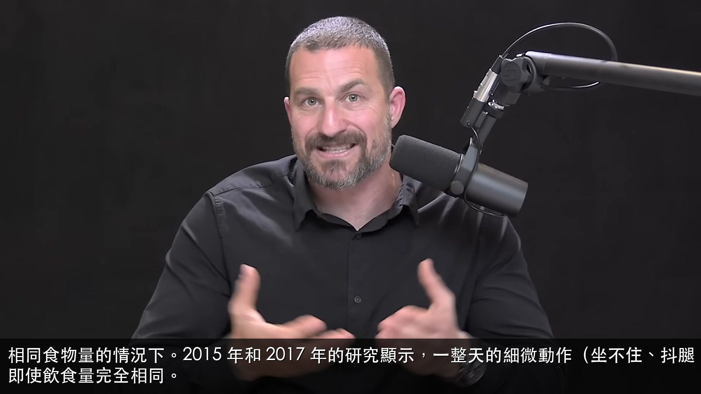
相同食物量的情況下。2015 年和 2017 年的研究顯示，一整天的細微動作（坐不住、抖腿、多次起立踱步）就能帶來可觀的脂肪減少，即使飲食量完全相同。
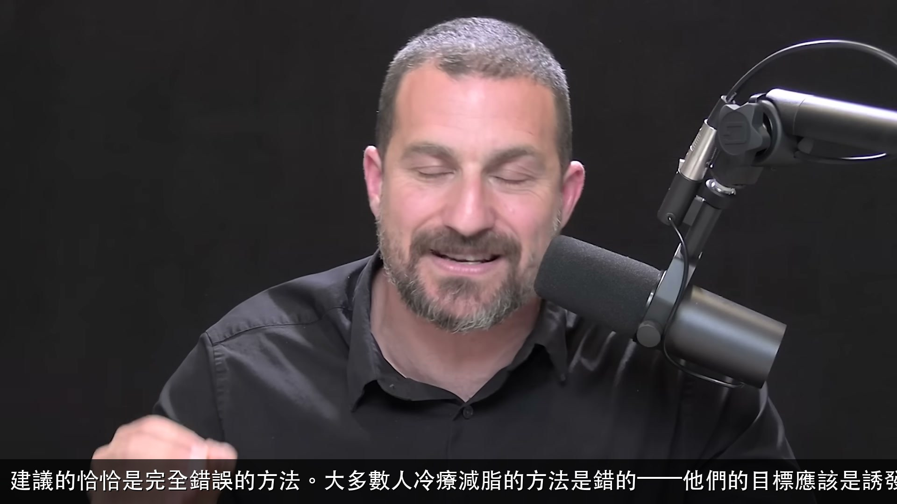
建議的恰恰是完全錯誤的方法。大多數人冷療減脂的方法是錯的——他們的目標應該是誘發顫抖，而不是快速讓身體適應寒冷。
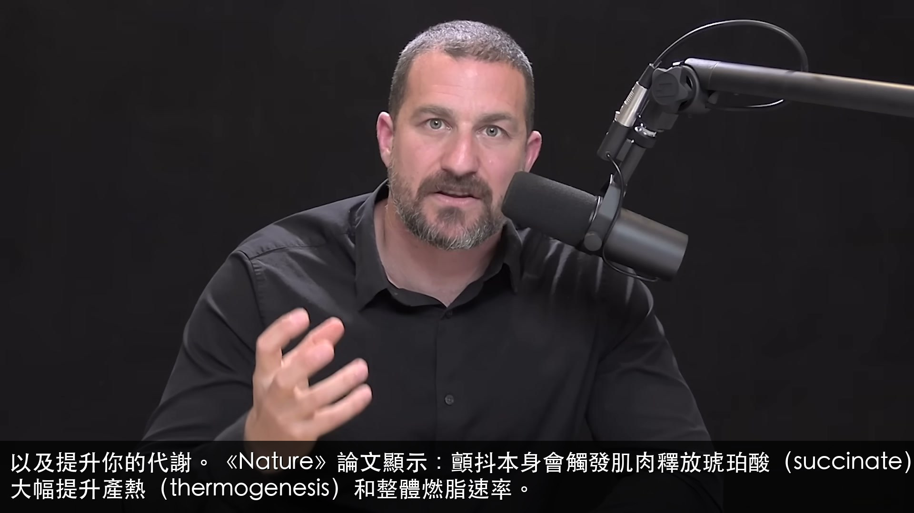
以及提升你的代謝。《Nature》論文顯示：顫抖本身會觸發肌肉釋放琥珀酸（succinate），琥珀酸再作用於棕色脂肪，大幅提升產熱（thermogenesis）和整體燃脂速率。
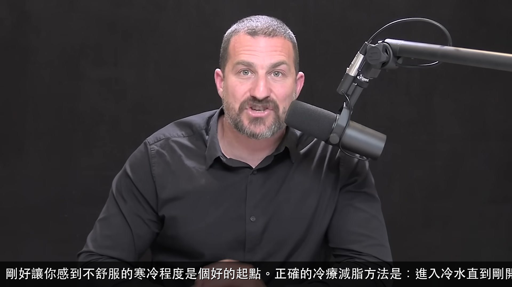
剛好讓你感到不舒服的寒冷程度是個好的起點。正確的冷療減脂方法是：進入冷水直到剛開始顫抖，出來不擦乾，等一到三分鐘後再進去，重複三組——每週一到三次。
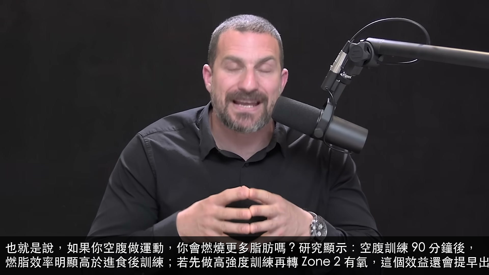
也就是說，如果你空腹做運動，你會燃燒更多脂肪嗎？研究顯示：空腹訓練 90 分鐘後，燃脂效率明顯高於進食後訓練；若先做高強度訓練再轉 Zone 2 有氧，這個效益還會提早出現。
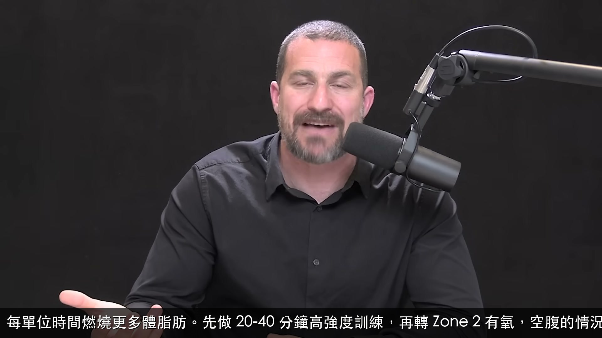
每單位時間燃燒更多體脂肪。先做 20-40 分鐘高強度訓練，再轉 Zone 2 有氧，空腹的情況下，每單位時間燃燒的體脂肪比例會高於進食後訓練。
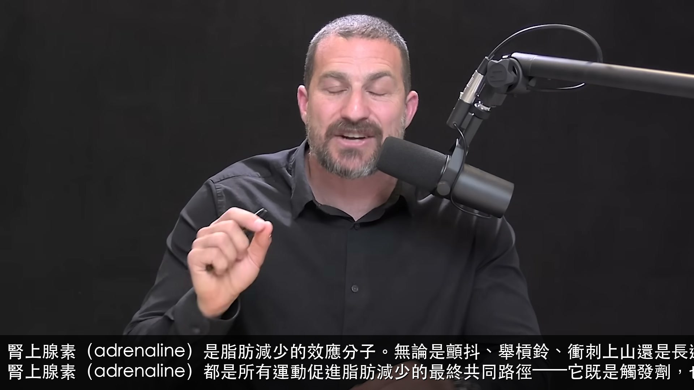
腎上腺素（adrenaline）是脂肪減少的效應分子。無論是顫抖、舉槓鈴、衝刺上山還是長途騎車，腎上腺素（adrenaline）都是所有運動促進脂肪減少的最終共同路徑——它既是觸發劑，也是效應器。
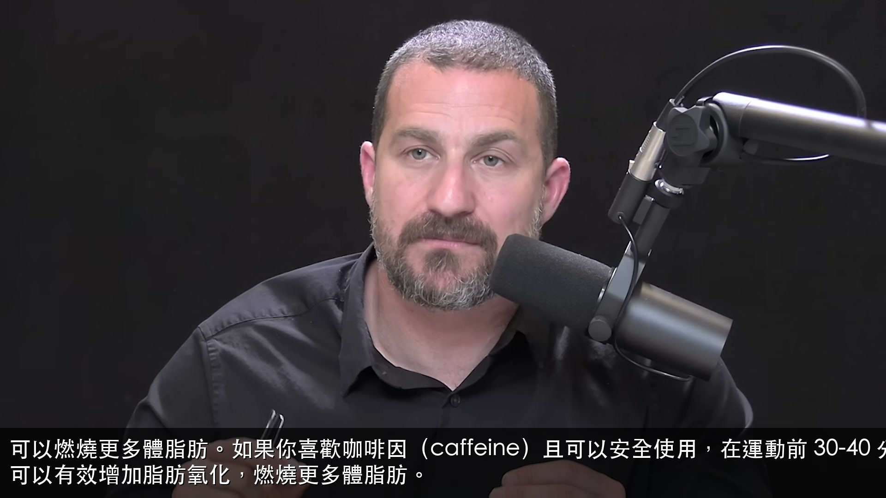
可以燃燒更多體脂肪。如果你喜歡咖啡因（caffeine）且可以安全使用，在運動前 30-40 分鐘攝取 100-400 毫克咖啡因，可以有效增加脂肪氧化，燃燒更多體脂肪。
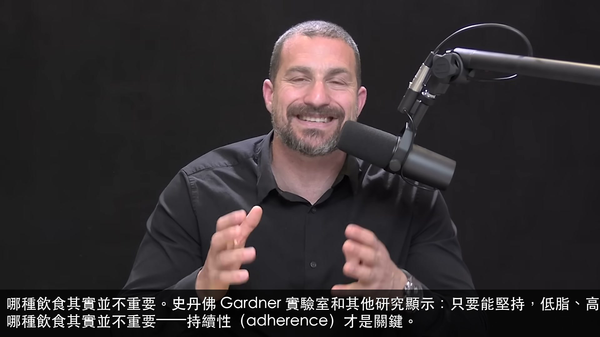
哪種飲食其實並不重要。史丹佛 Gardner 實驗室和其他研究顯示：只要能堅持，低脂、高脂、生酮（keto）或間歇性禁食，哪種飲食其實並不重要——持續性（adherence）才是關鍵。